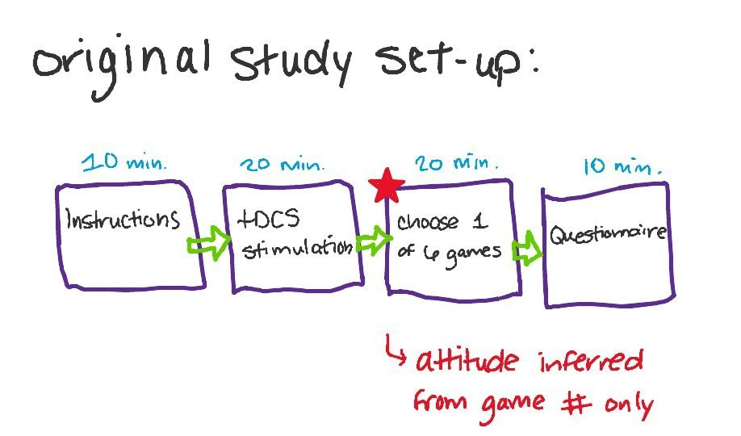
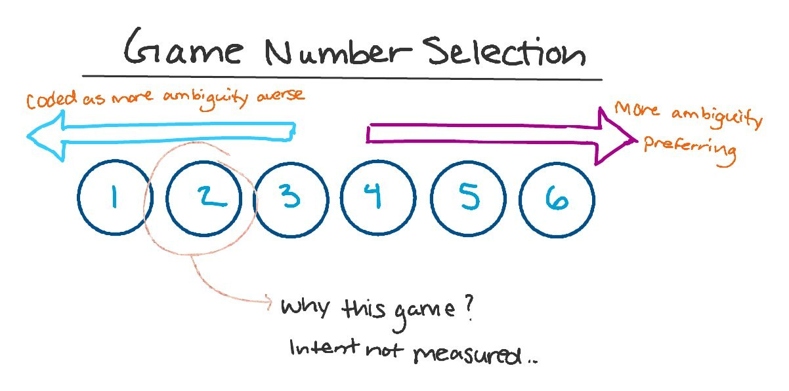
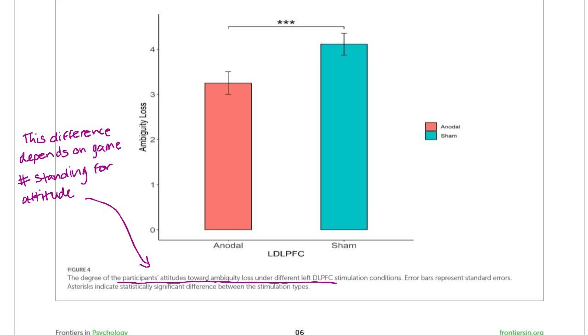
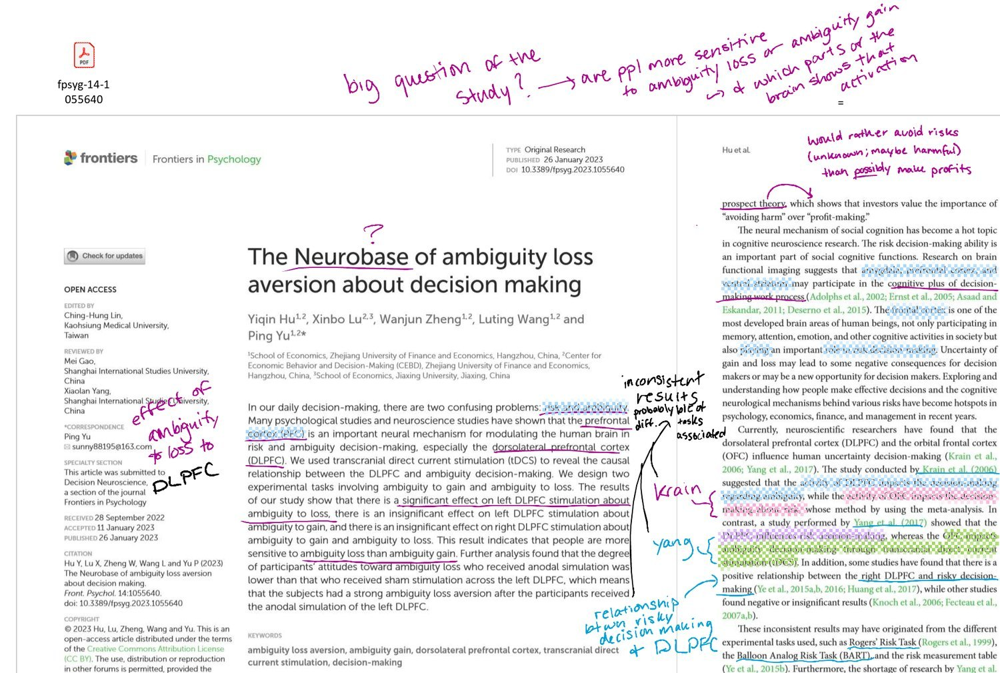
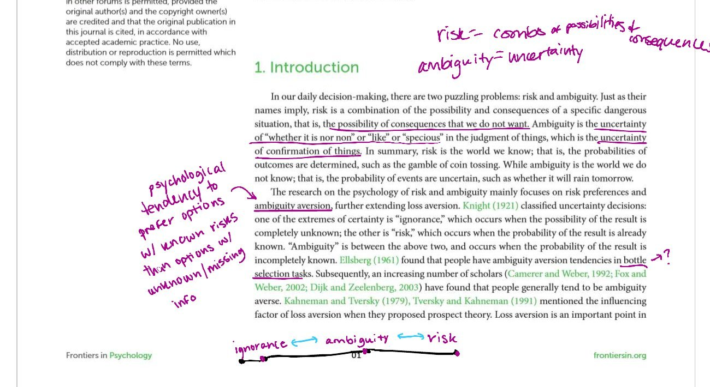
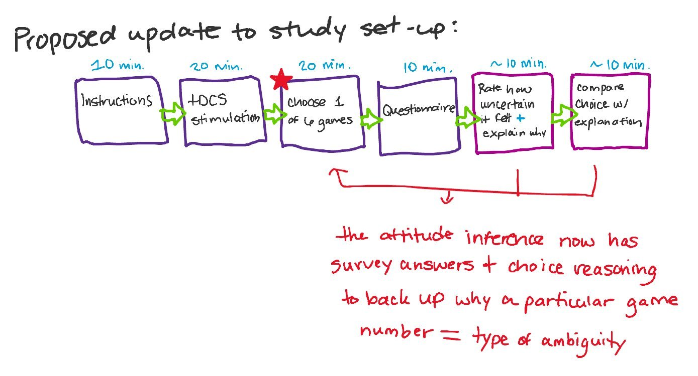
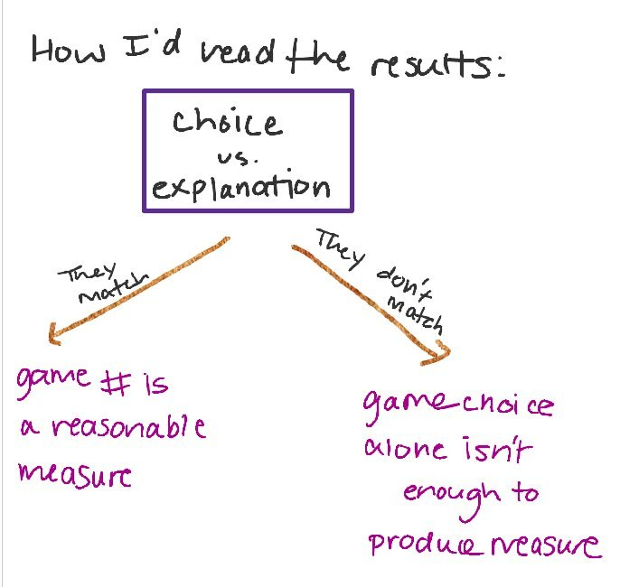

Completed: critical analysis Proposed: study not yet run
Beyond Behavioral Metrics: Investigating User Intent Under Uncertainty
A critique of how one neuroscience experiment measured ambiguity preferences, and a proposed mixed-methods study of whether choices, clicks and selections explain what people intended.
What is finished and what is not: The critique is complete. The hypothesis and the experimental extension are proposals. I have not collected any data, and nothing on this page is a result.
At a glance
- Type
- Independent research methodology case study and proposed UX research protocol
- Origin
- My critical analysis of a neuroscience experiment, written in neuroscience coursework
- What I investigated
- Whether a recorded choice tells us why someone made it
- My role
- Wrote the critique, the hypothesis and the proposed study design
- Methods and skills
- Construct validity analysis, hypothesis development, experimental design, mixed-methods reasoning
- Data collected
- None
Labels show status: Completed work is finished. Proposed work has not been run.
The question
When someone makes a choice, how much can we conclude about why they made it?
Behavioral metrics such as clicks, selections and conversions record what people did. On their own they do not show whether a person understood the options, what they intended, or what motivated them. I am investigating where that gap matters. I started from a measurement problem in a neuroscience experiment I evaluated, and I am extending it to decision-making products.
The original study and the measurement problem
Completed
The study inferred participants' preferences about ambiguity from which of six numbered games they chose. The researchers treated the choice as an indicator of a psychological attitude.
The study is Hu Y, Lu X, Zheng W, Wang L and Yu P (2023), "The Neurobase of ambiguity loss aversion about decision making," Frontiers in Psychology 14:1055640 (doi:10.3389/fpsyg.2023.1055640). It tested whether stimulating the dorsolateral prefrontal cortex with tDCS changed how people responded to ambiguity framed as losses versus gains.
The limitation I identified is one of construct validity. The choice was read as evidence of an attitude, but participants' own reasoning was not investigated. A choice can be consistent with an ambiguity preference without showing that the preference produced it.



My annotations on the paper


What construct validity means
Construct validity asks whether a measure captures the concept it is meant to capture. A choice between games is a behavior. Whether it measures an attitude toward ambiguity is a separate claim that needs its own support.
Two ways to measure the same choice
Proposed
Original: behavior only
What the study measured
- Participant chooses one of six numbered games.
- Researchers read the choice as an ambiguity preference.
- The participant's reasoning is not examined.
Proposed: mixed methods
What I propose to add
- Participant chooses one of six numbered games (unchanged).
- Participant explains the choice in their own words.
- Participant rates how uncertain the situation felt.
- Compare the three measures: do they support the same interpretation?
Figure: the original measurement approach next to the proposed one. The proposed design has not been run, and no data have been collected.

Why mixed methods
Each measure answers a different question. The choice shows what happened. The explanation shows how the person describes their reasoning. The rating shows how uncertain the situation felt to them. Comparing them tests whether the choice alone is enough.
My contribution
Completed
- Identified a potential construct-validity limitation in how the study measured ambiguity preferences.
- Proposed supplementing behavioral choices with participant explanations and perceived-uncertainty ratings.
- Developed a testable hypothesis.
- Outlined an experimental extension that compares the measures.
- Considered how different results would support or challenge the original measurement approach.
I did not run the original study, and I have not run the proposed one.
Hypothesis and possible interpretations
Proposed
Hypothesis: participants' behavioral choices under ambiguity are associated with their self-reported reasoning and perceived level of uncertainty.
Why this is worth testing: the original study determines ambiguity preference from the number of the game a participant selected, but the choice itself may not fully explain why the participant made it.
| If this happens | It would suggest |
|---|---|
| The choice, explanation and rating agree | The choice is a reasonable indicator of the attitude, at least in this task. |
| They diverge | The choice alone is not a valid measure of the attitude, and the explanations and ratings add information the choice misses. |

From the lab to product research
Proposed
Decision-making interfaces, prediction platforms and other products involving uncertainty record clicks, selections and conversions. The same question applies: what do those behaviors tell a product team about intent, comprehension and motivation?
Research questions
- Do clicks, selections and conversions support the same conclusion about intent as users' own explanations?
- Where behavior and stated reasoning disagree, what does each tell a product team?
- How does perceived uncertainty change how well behavior reflects intent?
Proposed methods
Behavioral logs or analytics for what users did, think-aloud or post-task explanations for why, and perceived-uncertainty ratings for how the situation felt.
Limitations
- Not yet tested. There are no data, so every interpretation above is untested.
- Self-explanations may not fully reflect the reasoning behind a choice, and asking people to explain can change how they decide.
- The proposal extends one study's task into product settings. How well the two fit is an assumption to test.
What this shows about how I work
Behavioral data can tell a team what happened. Explanations and ratings help address why. A research plan should say which question each method can answer, and where it cannot.
Research in progress
Where this research is going
My critique raised a broader question: how does uncertainty shape not only the choices people make, but also their motivation to pursue possible rewards?
I am now working on a neuroscience literature review of how uncertainty about monetary outcomes relates to anticipatory neural activity and later reward-seeking decisions. The longer-term direction is a UX research question about reward-driven digital experiences: how interfaces present uncertain outcomes, and what behavioral metrics can and cannot tell us about why people keep participating.
Current stage: literature review in progress. The UX research extension is planned and has not been started. The neuroscience literature does not by itself show that a particular interface causes any behavior, so that question would need its own evidence and methods.